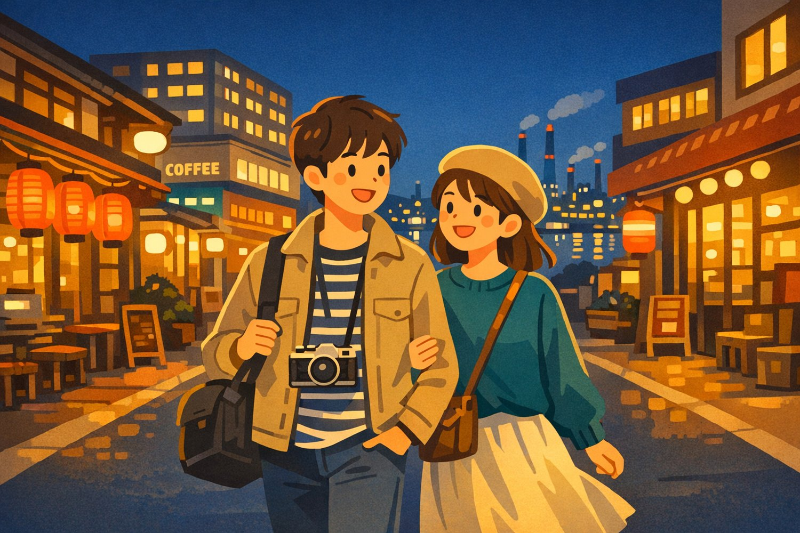
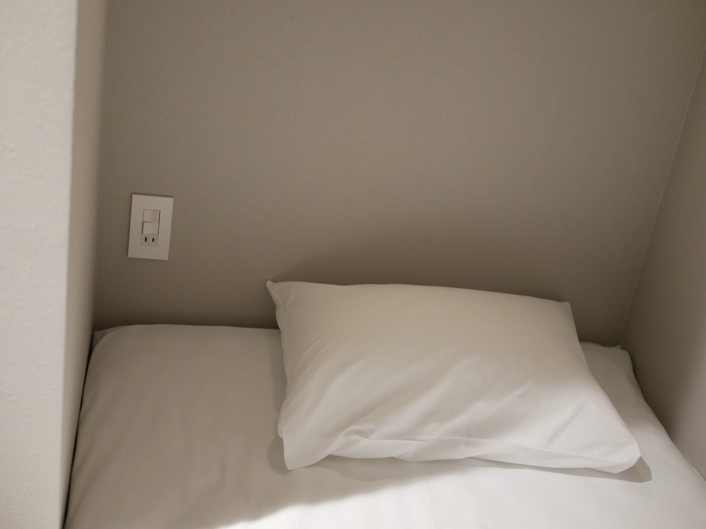
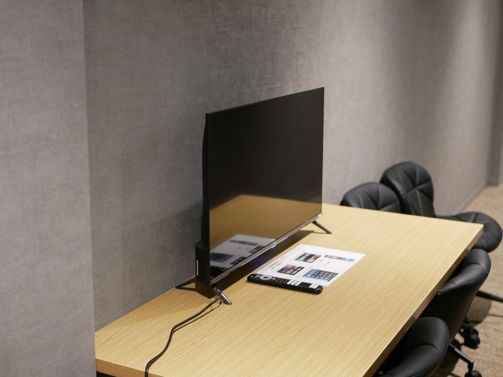
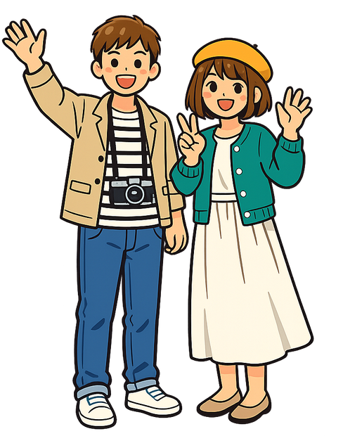

まちごとホテル
町まるごとが、あなたの宿。
純喫茶、工場夜景、赤提灯——
作られていない昭和を歩く、周南のまち。


客室駅前の潔いキューブ個室。旅の拠点はここから。
 まち
まち銀南街のアーケード、昭和初期の建物。カメラ片手に。
工場夜景に赤提灯。締めはサウナでととのう。
駅前の宿に荷物を置いて、ノスタルジック・マップを受け取る。
海側へ。夕闇に浮かぶコンビナートの光を眺める。
大衆酒場でチケット乾杯。地元の人にまじって。
宿に戻って、セルフロウリュのサウナで整える。
マスターのコーヒーとモーニング、メロンソーダも一杯。
5,500〜6,000円 / 泊（1名・税込）
素泊まりプラン（4,800円〜）もご用意。まずは気軽に、この町の夜を。
パスポートのチケットが使える提携店。地元の人にまじって、あなただけの一軒を。
純喫茶・銭湯・レトロ雑貨店…提携店は順次拡大中。

